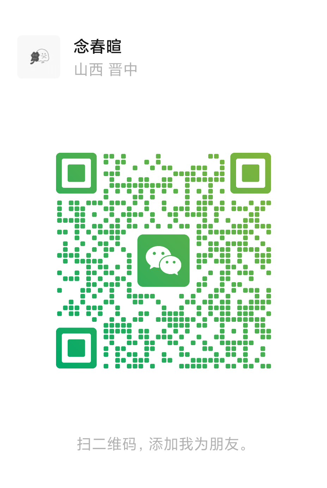
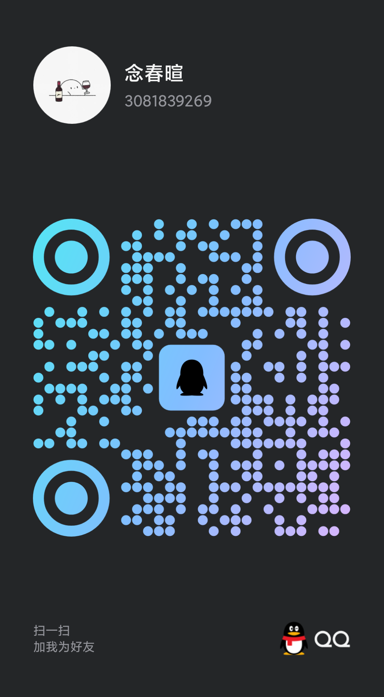

微
微信联系念春暄 · 山西晋中

使用微信扫一扫，添加时请备注“网站定制”。
CONTACT CREATOR
准备学校、学院、社团或活动资料即可开始。先说明服务对象和上线时间，我会帮你把散乱信息整理成手机上真正好用的网站。

使用微信扫一扫，添加时请备注“网站定制”。

扫一扫添加 QQ，或复制号码后在 QQ 中搜索。
HOW IT WORKS
正式开始前会先确认需求边界，避免信息不全时直接动工。
确定受众、栏目、资料来源、视觉偏好和交付时间。
完成手机优先页面，本地检查后提供在线预览确认。
确认后部署到客户自己的仓库，并交付后续更新方法。
本页二维码由制作方主动公开用于业务联系，请勿用于骚扰、群发或其他无关用途。